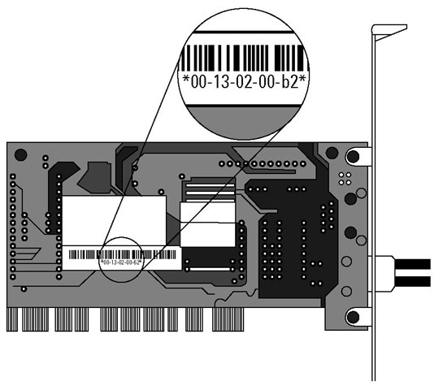

Welcome to my webpage. Here, I will share weekly
blogs for my CIT 480 class.
Blog 1: Changing MAC Addresses
Today’s blog is going to be about Mac Addresses and how to change them via a short python script.

So, what is a MAC address?
The MAC address is assigned by the manufacturer of a Network Interface Controller (NIC), and it is stored in the hardware. The NIC is a computer circuit card that allows a computer to connect to a network.